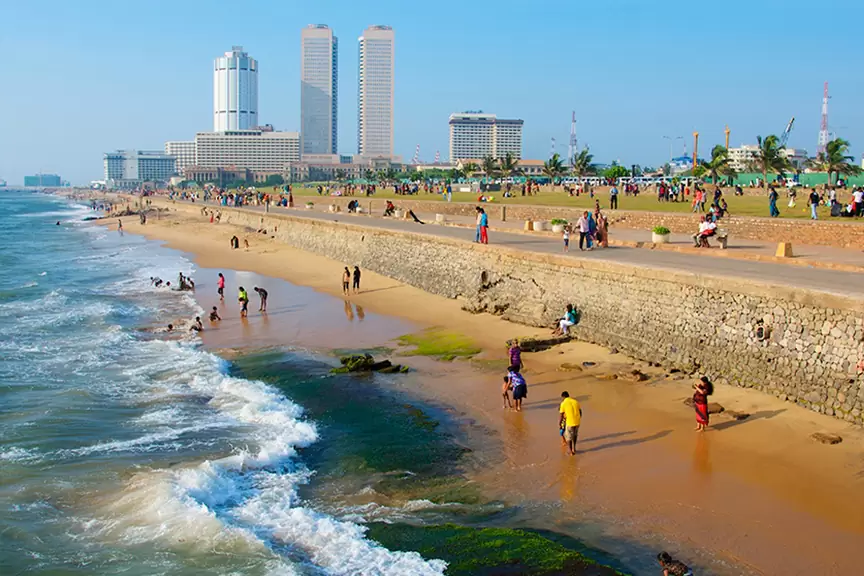
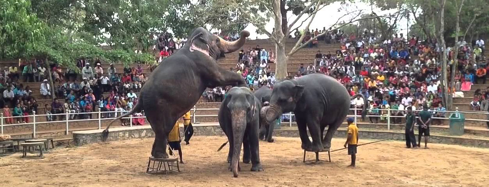
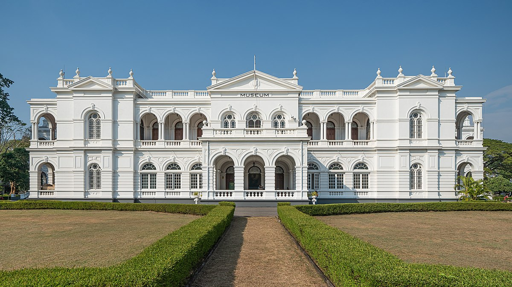
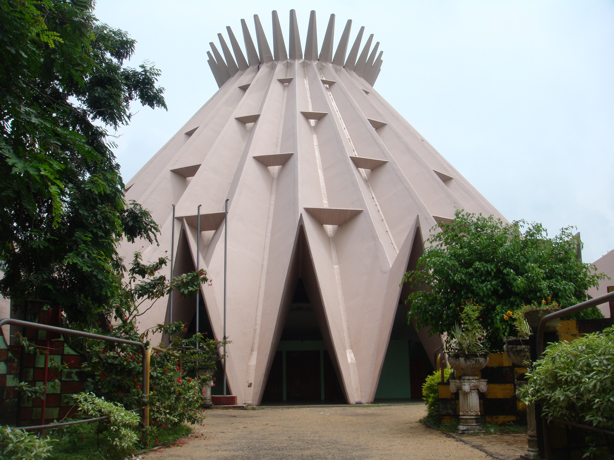

The Best Places to Travel in Western Province...
|  |
Galle Face is a 5 hectare (12 hectare) city park, stretching 500 meters (1,600 ft) along the coast, in the heart of Colombo, the financial and business capital of Sri Lanka. The promenade was started in 1859 by Emperor Sir Henry George Ward, although the original Galle Face Green expanded beyond much larger. in a place that is visible today. Galle Face Green was originally used for horse racing and as a golf course, but it was used It is also used for cricket, polo, soccer, tennis and rugby.
|  |
The National Zoological Gardens of Sri Lanka (also called the Colombo Zoo or Dehiwala Zoo) are a zoo in Dehiwala, Sri Lanka, founded in 1936. and birds. The zoo shows animals but also emphasizes animal conservation and well-being, as well as education. The current Director-General of the zoo is Shermila Rajapaksha. The zoo has 3,000 animals and 350 species since 2005. The annual revenue is LKR 40 million. Zoo dehiwala changes its inhabitants and other zoos to breed objectives. In June 2021, a lion named Thor was reported to have lived in it The zoo since 2012 has reportedly been tested for COVID-19.
|  |
Colombo National Museum, also known as the Sri Lanka National Museum one of the two museums in Colombo. It is the largest museum in Sri Lanka. It is maintained by the Department of the National Museum of central government. The museum contains the most important collections to Sri Lanka as a national regalia, including the throne and crown of Kandian kings and many other exhibitions on ancient Sri Lankan history.
|  |
The Sri Lanka Planetarium is a public place located in Colombo, Sri Lanka. It is the first and only planet in the world and is maintained as a center under the Department of Science, Technology and Research. The Planetarium was established on 1 February 1965 by the State Engineering Association as a special a feature of the Ceylon industrial exhibition that was held in Colombo the same year. The planetarium was designed is a senior engineer from the State Engineering Corporation of Ceylon, A. N. S. Kulasinghe, and was built by engineers from Germany. The building picks up items from Liverpool Metropolitan Cathedral (Sir Frederick Gibberd - 1960) and Brasília Cathedral (Oscar Niemeyer - 1960). I The building has a reinforced concrete floor and a prefabricated precast concrete, pre-constructed concrete plate. in place. The building was sponsored by the German Democratic Republic as a gift in Ceylon. With the help of a universal projector located in the center of this building, the artificial sky created on a screen shaped above the 570-seat hall. The universal project is Carl's product Zeiss AG East Germany.